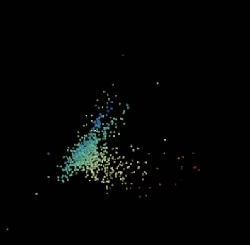

Socos is an educational technology & data mining company based in San Francisco. We specialise in research and development of new technologies combining machine learning and learning sciences, providing Cognitive Analytics, Adaptive Learning and Educational Data Mining services.
Socos develops web applications both for individuals, students and educators, and large companies and academic institutions. In addition, we offer direct consulting services for educational data mining research. Our team of exceptional researchers has unique expertise in machine learning, theoretical neuroscience, cognitive psychology and the learning sciences. The promise of technology to revolutionize education is finally being realized. Intelligent systems from Socos will power the change.
Cognitive Analytics
One of the most fundamental challenges in teaching is peering inside students' heads and figuring out what they're thinking.
Our Cognitive Analytics dashboard can plug into any LMS or other data sources. It gives teachers immediate insight into the current understanding of their students directly from the work the students already generate.
The value of specific lessons and interventions can be assessed in the context of the actual learning environment, from the level of individual students to complex subpopulations.
Adaptive Learning
The dream of educational technolgy
Everyone wants a system which can automatically tailor itself to the specific needs of each individual student.
Our solution to this is the Cognitive Graph, a unique approach to modeling the connections between ideas
Educational Data Mining
While education is a field rich with data, obtaining high-quality data and processing them meaningfully and efficiently remains difficult.
The team at Socos can advance your development projects with individually focused research in
- Text Mining
- Cognitive Modeling
- Multi-modality data analysis
We love data!